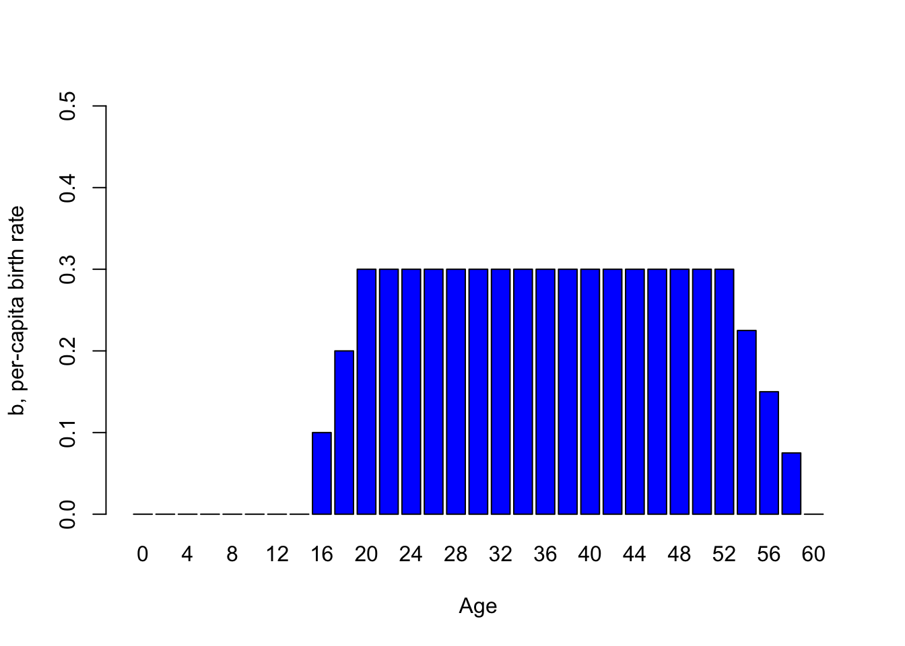
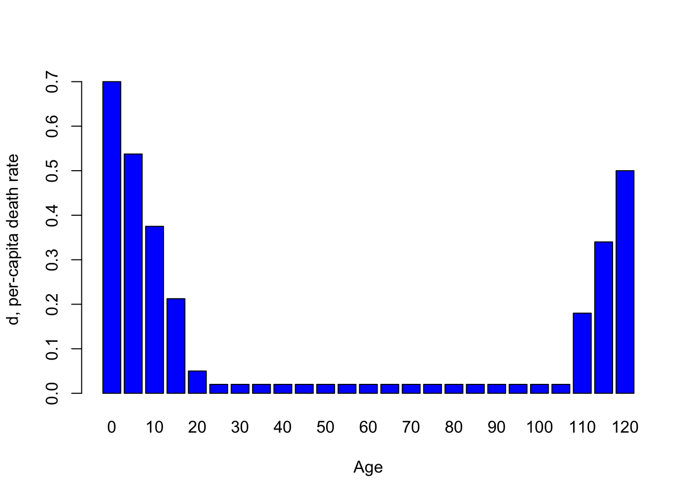

Poblaciones estructurada por edad
BIOL4558
Agosto 2021
Cuando \(d\) y \(b\) dependen de algo más que la densidad …

Tome este elefante de la india, por ejemplo. ¿Cómo depende la tasa de reproducción de la edad en este caso?
¡Podríamos imaginar que se parece a esto!
Elephant_age <- seq(0,60, by=2)
Elephant_age## [1] 0 2 4 6 8 10 12 14 16 18 20 22 24 26 28 30 32 34 36 38 40 42 44 46 48
## [26] 50 52 54 56 58 60#Birth_rate <- c(rep(0,times=7),seq(0,0.3,length=4),rep(0.3,times=15),seq(0.3,0,length=5))
Birth_rate <- c(0,0,0,0,0,0,0,
0,0.1, 0.2, 0.3,
0.3,0.3,0.3,0.3,0.3,
0.3,0.3,0.3,0.3,0.3,
0.3,0.3,0.3,0.3,0.3,
0.3, 0.225, 0.15, 0.075, 0)
names(Birth_rate) <- Elephant_age
barplot(Birth_rate,xlab="Age",ylab="b, per-capita birth rate",col="blue",ylim=c(0,0.5))

¿Qué pasa con las tasas de mortalidad per cápita de una tortuga? Podríamos imaginar algo que se parece a esto …
Tortoise_age <- seq(0,120,by=5)
Death_rate <- c(seq(0.7,0.05,length=5),seq(0.02,0.02,length=16),seq(0.02,0.5,length=4))
names(Death_rate) <- Tortoise_age
barplot(Death_rate,xlab="Age",ylab="d, per-capita death rate",col="blue")
Entonces, para muchas especies, la tasa de natalidad per cápita y la tasa de mortalidad dependen fundamentalmente de la edad.

Q: Imagina que estás intentando restablecer una población de sapos “pata de espada”. Toma 1000 renacuajos de una población cautiva y los coloca en un humedal temporal justo después de una tormenta. ¿Cómo se vería el crecimiento de la población en los próximos años, suponiendo que la estrategia de reintroducción fuera exitosa?
Trata de calcular cuantas ranas originales hubiese en el 2 año, el 3 año, en 10 años.
Adicional: tasas vitales estructuradas por sexo
Q: ¿Puede pensar en algunos ejemplos del mundo real en los que las tasas vitales pueden diferir entre hombres y mujeres?
Q: ¿Es importante considerar la estructura de sexos al modelar poblaciones? ¿Por qué o por qué no?

Q: Imagínese una población de 100 titíes león (Golden headed lion tamarins) de cabeza dorada (Leontopithecus chrysomelas) que consiste en todos los machos adultos y hembras post-reproductivas. ¿Cuál es el estado de conservación de esta población?
Life table!
Las poblaciones estructuradas por edad a menudo se representan mediante una tabla llamada tabla de vida. Una tabla de vida generalmente representa una única cohorte (grupo de organismos de la misma especie que nacen durante el mismo año) que se rastrea a lo largo del tiempo. He aquí un ejemplo:
| x | S(x) | b(x) | l(x) | g(x) |
|---|---|---|---|---|
| 0 | 500 | 0 | 1.0 | 0.80 |
| 1 | 400 | 2 | 0.8 | 0.50 |
| 2 | 200 | 3 | 0.4 | 0.25 |
| 3 | 50 | 1 | 0.1 | 0.00 |
| 4 | 0 | 0 | 0.0 | NA |
Calendario de fecundidad
El componente de fecundidad de la tabla de vida se llama “programa de fecundidad”. El término \(b(x)\) representa la tasa de natalidad per cápita para las mujeres de edad x.
Calendario de supervivencia
¡La fecundidad es solo la mitad de la historia! El componente de supervivencia de la tabla de vida se llama “programa de supervivencia”.
El término cohorte representa un grupo de personas que nacieron al mismo tiempo. En la tabla de vida, el término \(S(x)\) se refiere al número de individuos de una cohorte particular que todavía están vivos a la edad x. A partir de estos datos sin procesar, calculamos dos términos, llamados supervivencia y tasa de supervivencia
El término \(l(x)\) representa la proporción de la cohorte que sobrevive desde la edad 0 hasta la edad x. Esto se llama supervivencia
El término \(g(x)\) representa la proporción que sobrevive desde la edad x hasta la edad x + 1. Esto se llama tasa de supervivencia
Tipos de curvas de supervivencia …
Hay tres tipos principales de curvas de supervivencia (también llamadas programas de supervivencia), clasificadas como
- Tipo I
- Tipo II
- Tipo III
Las curvas de supervivencia describen cómo el logaritmo de supervivencia (\(log(l(x))\)) disminuye con la edad. Estos tres tipos de patrones de historia de vida se pueden ilustrar con tres ejemplos del mundo real:
- humanos,
- pájaros cantores
- ranas.
Q: ¿Puede la supervivencia aumentar con la edad?
Q: ¿Por qué usamos el logaritmo de supervivencia para caracterizar las curvas de supervivencia?
Type I

Type II

Type III


¡Tenga en cuenta la escala logarítmica en el eje Y!
Q: ¿Qué curva de supervivencia es la más común en la naturaleza?
Defiende su respuesta
Debate entre cuatro grupos del salón
Ejercicio en clase: crecimiento de la población estructurado por edad
In this exercise we will explore some facets of age-stuctured populations.
- Cargue la tabla de vida anterior en esta lección, haciendo clic aquí. Utilice esta tabla para calcular la tasa de reproducción neta, $R_0 $. Esto representa el número promedio (esperado) de crías hembras producidas por hembra durante toda su vida. ¡Esto también se conoce como potencial reproductivo de por vida! Esto se puede calcular como:
\(R_0 = \sum_{x=0}^k l(x)\cdot b(x)\)
Donde \(k\) es la edad máxima.
Q: ¿Puedes implementar esta fórmula en Excel? ¿Cuál es la respuesta?
- Si la tasa neta de reproducción, $R_0 $ es positiva, entonces la población está por encima de la tasa de reemplazo de 1 y, por lo tanto, la población crecerá. Si \(R_0\) es negativo, entonces la población disminuirá. Esto suena familiar, ¿verdad? Al igual que la tasa de crecimiento finita, \(\lambda\).
PERO, ¿cuál es el marco de tiempo de $R_0 $? ¿Cuál es el período de tiempo de \(\lambda\)? Son diferentes, ¿verdad? ¡La diferencia es que $R_0 $ describe el crecimiento por generación !.
¿Qué es una generación? La definición más común (para el tiempo de generación) es la Edad media de los padres de toda la descendencia producida por una sola cohorte. Esto se puede calcular a partir de la tabla de vida como:
\(G = \frac{\sum_{x=0}^{k}l(x)\cdot b(x)\cdot x}{\sum_{x=0}^{k}l(x)\cdot b(x)}\)
Vea si puede implementar esto en Excel (¡o cualquier software de hoja de cálculo que use!).
Q: ¿Cuál es el tiempo de generación de la población en la tabla?
- Ahora, ¿puede calcular la tasa intrínseca de crecimiento (\(r\)) para esta población estructurada por edad?
Para una aproximación de primer orden, puede usar esta ecuación:
\(r = \frac{ln(R_0)}{G}\)
Con solo mirar esta ecuación, verá que los organismos con tiempos de generación más largos ($G $) tienen tasas intrínsecas de crecimiento más lentas, en igualdad de condiciones.
Q:Implemente esta ecuación en Excel. ¿Es esta una población en crecimiento exponencial?
- Cargue un modelo estructurado por edades en InsightMaker. Puedes clonar Este Aqui.
4a. Inicialice la población como en el ejemplo del sapo spadefoot de arriba, con solo la primera clase de edad (juvenil). ¿Qué dinámica poblacional ocurre al comienzo de la simulación? ¿Qué pasa con el final de la simulación?
4b. ¿Puede modificar la abundancia inicial de juveniles, subadultos y adultos para que la población exhiba un crecimiento exponencial uniforme para las tres clases de edad (y la población en su conjunto)? Esto se llama ** Distribución de edad estable (S.A.D.) **
4c. Ahora cambie las tasas vitales (Tasa de mortalidad juvenil, Tasa de mortalidad secundaria , Tasa de transición a Subadulto , etc.). ¿El crecimiento de la población sigue siendo fluido? Si no es así, ¿puede encontrar la NUEVA Distribución de edad estable ?
4d. Regrese al modelo inicial (este, aquí). Ahora cambie la tasa de mortalidad de adultos a 0,65. ¿Que lo que sucede? ¿Es esta una población en crecimiento?
Q: Usando el modelo del paso 4d, con la mortalidad de adultos establecida en 0.65. ¿Cuántos subadultos necesitarían agregarse a la población cada año (suplementación de individuos a la población) para mantener una población estable o en crecimiento de> 20 adultos?
Q: ¿Es la suplementación la mejor estrategia para conservar esta población?
Vea este documento para los codigos en Excel
### Texto en Ingles:
In-class exercise: age-structured population growth
In this exercise we will explore some facets of age-stuctured populations.
- Load up the life table from earlier in this lecture, by clicking here. Use this table to compute the net reproductive rate, \(R_0\). This represents the mean number of female offspring produced per female over her entire lifetime. This is also known as lifetime reproductive potential! This can be computed as:
\(R_0 = \sum_{x=0}^k l(x)\cdot b(x)\)
Where \(k\) is the maximum age.
Q: Can you implement this formula in Excel? What’s the answer?
- If the net reproductive rate, \(R_0\) is positive, then the population is above the replacement rate of 1, and therefore the population will grow. If \(R_0\) is negative, then the population will decline. This sounds familiar, right? Just like the finite rate of growth, \(\lambda\).
BUT, what is the time frame of \(R_0\)? What is the timeframe of \(\lambda\)? They are different right? The difference is that \(R_0\) describes growth per generation!.
What is a generation? The most common definition (for generation time) is the Average age of the parents of all the offspring produced by a single cohort. This can be computed from the life table as:
\(G = \frac{\sum_{x=0}^{k}l(x)\cdot b(x)\cdot x}{\sum_{x=0}^{k}l(x)\cdot b(x)}\)
See if you can implement this in Excel (or whatever spreadsheet software you use!).
Q: What is the generation time of the population in the table?
- Now, can you compute the intrinsic rate of growth (\(r\)) for this age-structured population?
To a first-order approximation, you can use this equation:
\(r = \frac{ln(R_0)}{G}\)
Just looking at this equation, you see that organisms with longer generation times (\(G\)) have slower intrinsic rates of growth, all else being equal.
Q: Implement this equation in Excel. Is this an exponentially growing population?
- Load up an age-structured model in InsightMaker. You can clone this one, here.
4a. Initialize the population like the spadefoot toad example from above- with only the first (juvenile) age class. What population dynamics occur at the beginning of the simulation? What about the end of the simulation?
4b. Can you tweak the initial abundance of juveniles, subadults and adults so that the population exhibits smooth exponential growth for all three age classes? This is called Stable Age Distribution
4c. Now change the vital rates (Juv mort rate, Sub mort rate, Transition rate to Subadult, etc.). Is the population growth still smooth? If not, can you find the Stable Age Distribution now??
4d. Now change the Simulation time step to 5 years, and return to an initial population with only juveniles. What happens? Is this a stochastic model? If not, why does it look like it has a random component? >
Ejercicio: To be submitted in MSTeam
LLenar los blancos: Usa las formulas aprendida para calcular y llenar los blancos. Enviaré un enlace por MSTEam para llenar los blancos.
library(tidyverse)
library(gt)
LT=tribble(
~Age, ~N_x, ~l_x, ~b_x, ~lxbx, ~m_x, ~S_x, ~d_x,
0, 956, 1, 0, 0, 0.24, NA, 0.24,
1, NA, 0.76, 2, NA, 0.3, 0.7, 0.23,
2, 507, NA, 3, 1.59, 0.58, 0.42, .31,
3, 213, 0.22, 1, .22, NA, 0.045, 0.21,
4, 9, 0.01, 0.5, 0.005, 1, 0, NA,
5, 0,0,0,0,NA, NA, NA
)
LT %>%
gt()| Age | N_x | l_x | b_x | lxbx | m_x | S_x | d_x |
|---|---|---|---|---|---|---|---|
| 0 | 956 | 1.00 | 0.0 | 0.000 | 0.24 | NA | 0.24 |
| 1 | NA | 0.76 | 2.0 | NA | 0.30 | 0.700 | 0.23 |
| 2 | 507 | NA | 3.0 | 1.590 | 0.58 | 0.420 | 0.31 |
| 3 | 213 | 0.22 | 1.0 | 0.220 | NA | 0.045 | 0.21 |
| 4 | 9 | 0.01 | 0.5 | 0.005 | 1.00 | 0.000 | NA |
| 5 | 0 | 0.00 | 0.0 | 0.000 | NA | NA | NA |